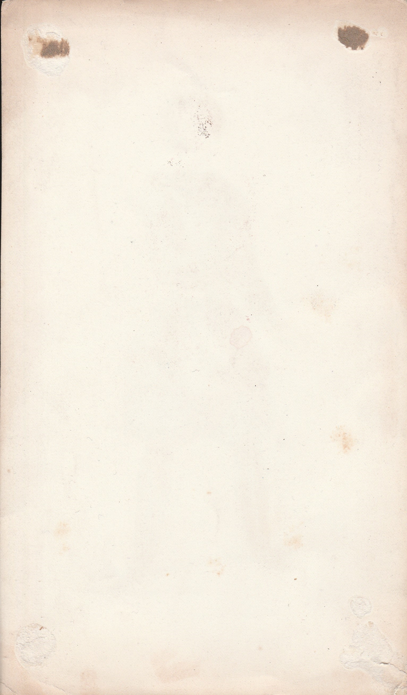

Specifics
-
Title: Battle, Role of Roskaw, in The Queen of Spades, 2nd Act, Theater of the Comic Opera
-
Type: Print
-
Physical Medium: Hardstock Paper
-
Digital Medium: JPEG
-
Color Profile: Water Colored
-
Artist: Alexander Lacauchie. Lithographer.
-
Publisher: Martinet (Paris)
-
Language: French
-
Description: A painting depicting a costume to be used in a theatrical performance. Cut out of original book to be put in some sort of frame where it was glued/taped to the frame, and then later removed
-
Date Published: 1850
-
Dimensions: 8.75" x 5.25"
-
Location of Origin: Paris, France
-
Location Found: Powells City of Books, Portland Oregon U.S.A.
-
Internet Archive Link: Here